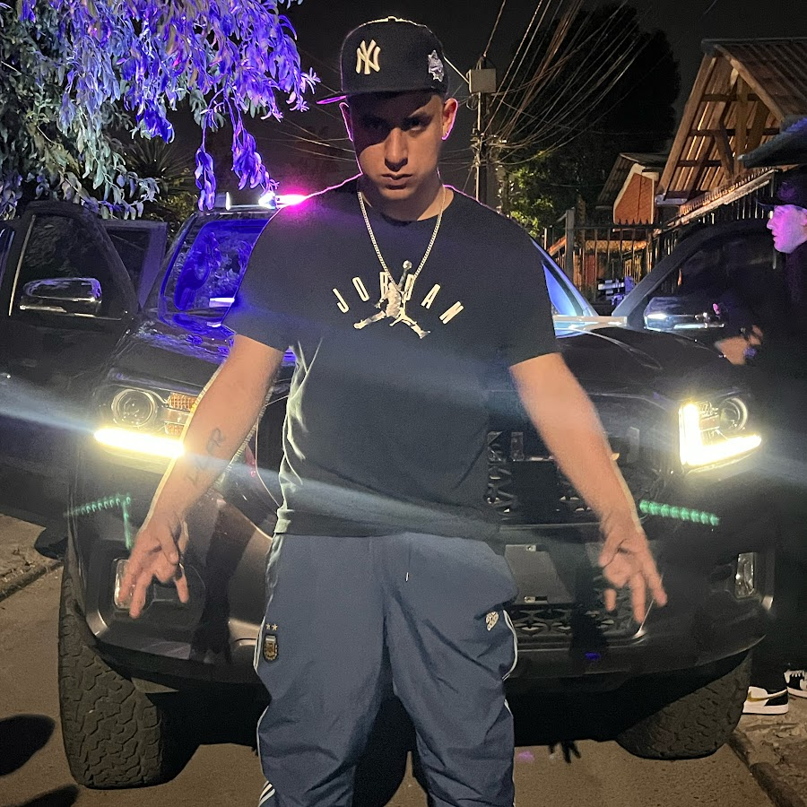

¡Página web oficial de Markush DLFR
Marco Andrés Arismendi González, conocido artísticamente como Markush DLFR, es un cantante y creador chileno que combina rap, trap y sonidos urbanos con su estilo fresco y auténtico.
En solo cinco años ha logrado posicionarse como una promesa de la música latina, destacando en plataformas como Spotify, YouTube y TikTok.
Su popularidad también creció gracias a su faceta como streamer, donde se conecta directamente con su comunidad. Con temas como "Bonita", "Lo Que Vivo", "Gata Nueva" y "Sigo Siendo Yo", su música refleja perseverancia, versatilidad y su sueño de conquistar el escenario mundial.